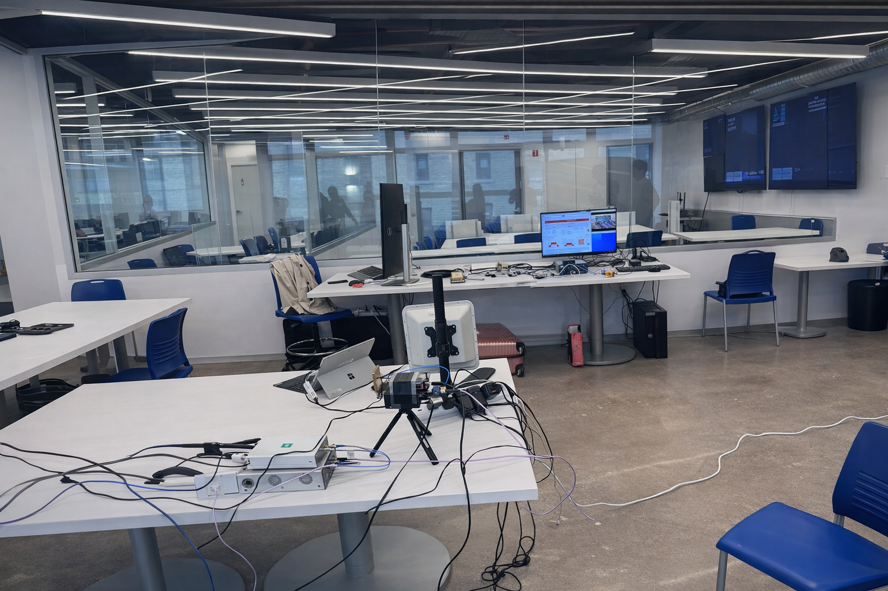
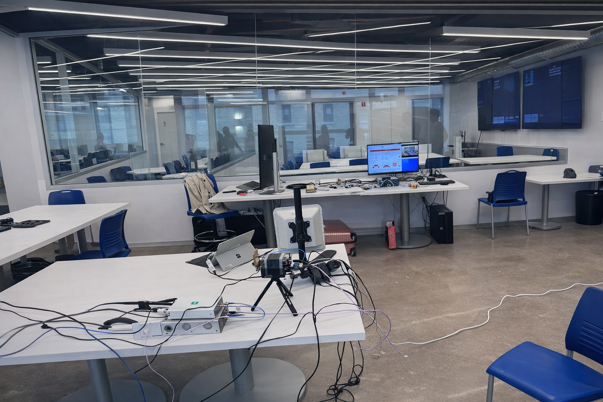

AIM Research Lab @ Katz
AIM Research Lab @ Katz
Pioneering intelligent, connected, and immersive systems
 

The AIM Research Lab drives innovation at the intersection of AI algorithms, IoT edge systems, and multimedia processing to create intelligent, real-time applications for industry and academia.
Funding: NSF | NIH | DOT| Others